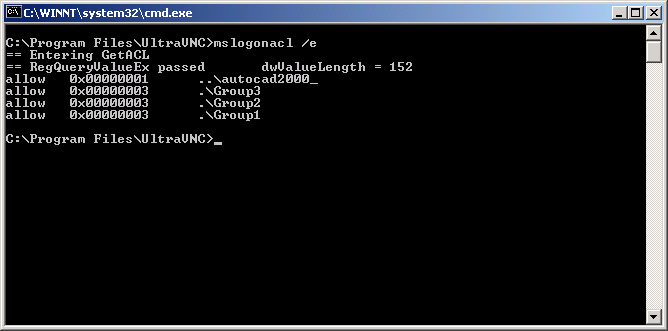

The purpose of MSLogonACL is to allow for automated UltraVNC installations including access rights configuration for MS-Logon II.
With the new MS-Logon functionality in UltraVNC, the access rights are stored in an ACL (access control list). This is a binary structure which holds a list of SIDs (security identifiers) together with the description which rights are granted or denied to each SID.
The ACL can be edited via the VNC properties page. In order to allow for automated VNC installations a method is required for configuring the ACL from the commandline. This is the purpose of MSLogonACL.
MSLogonACL /e file for exporting to file.
If file is omitted, the security settings are printed to the console (stdout).
Lines beginning with == are debug information on stderr.

MSLogonACL /i /a file for appending ACEs to the current ACL or
MSLogonACL /i /o file for overwriting the current ACL
reading the security configuration from file.
allow 0x3 domain\account
or
deny 0x3 domain\account
0x1 is ViewOnly, 0x3 is Interact and implies that you can also view the remote desktop.
domain can be a computername or the name of a domain.
If domain is not specified (like deny 0x3 account), Windows tries to match the account name to a local or a domain account.
It is not recommended to omit the domain part since this may lead to unexpected results.
account can be groupname or username.
If the accountname contains spaces, the domain\account expression is to be enclosed in quotationmarks:
allow 0x3 "domain\account"
Even if the accountname doesn't contain spaces, quotationmarks won't hurt.
MSLogonACL has two abbreviations for special domains:
one dot to denote the computername and two dots to denote the computer's domain:
.\account for a local account on the computer
or
..\account for an account in the computer's domain.